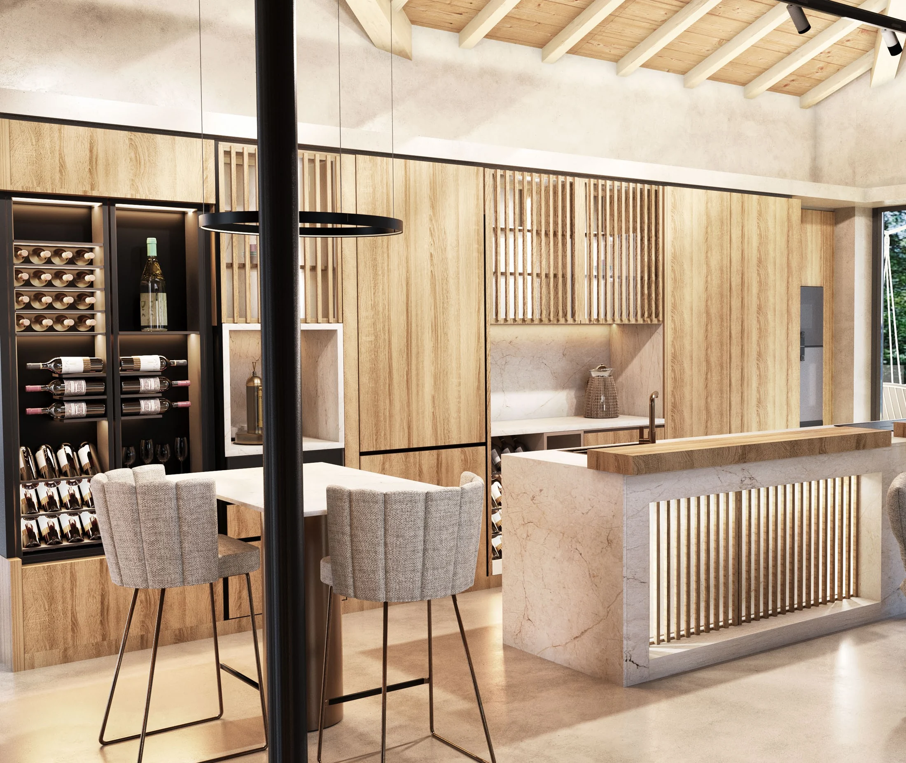
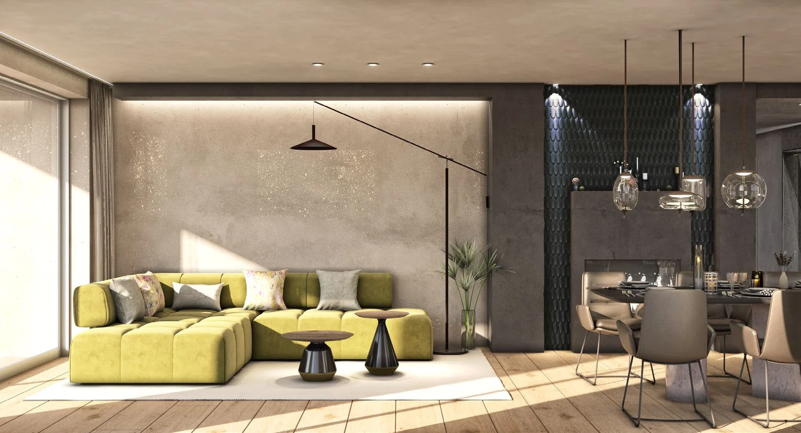
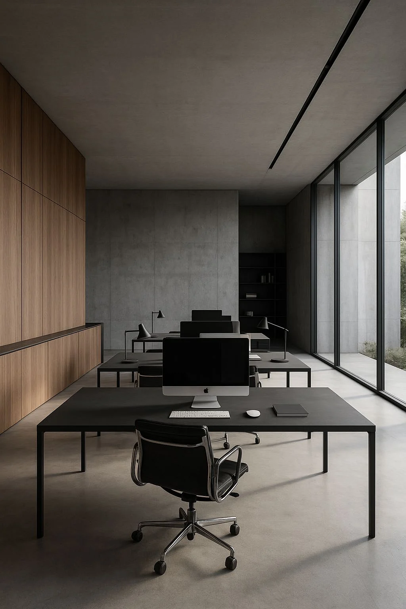
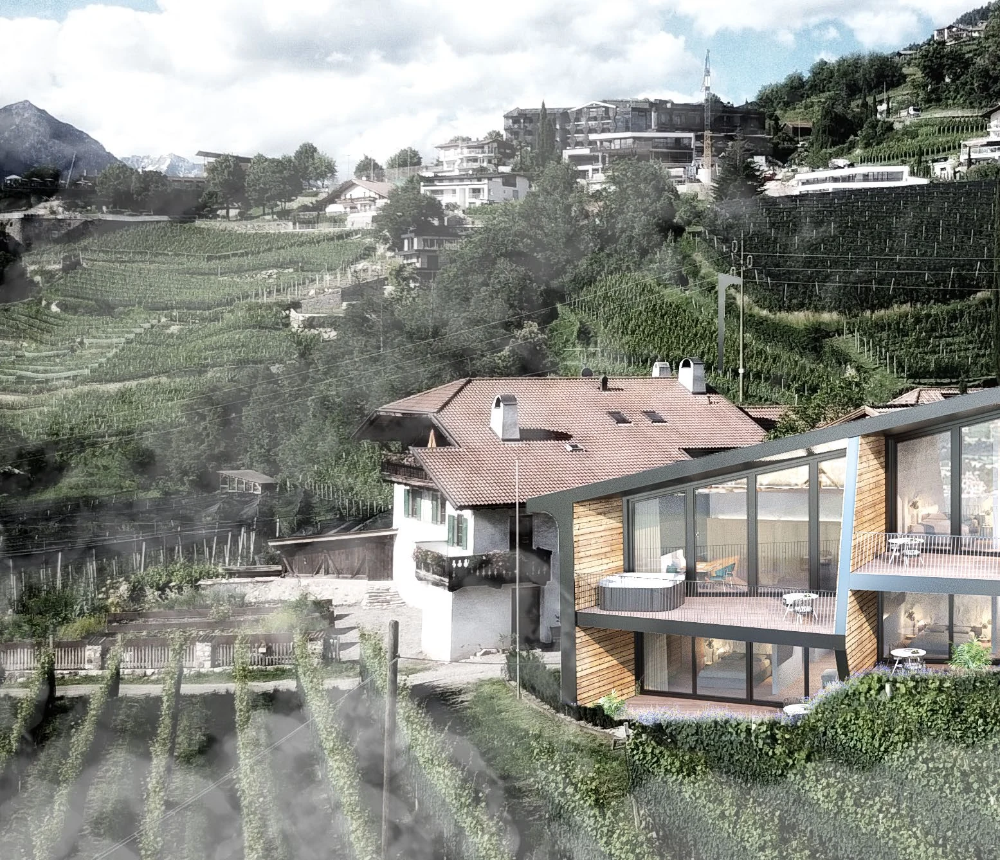

Interior Design
& Creative Direction
Spaces shaped by clarity, atmosphere and use.
Ousia Design is an independent interior design practice focused on residential, hospitality and spatial concepts.
Available for selected projects, design collaborations and remote studio support.
Concept Development · Interior Design · Custom Furniture · Visualization · Design Development






“Every intervention should have a reason — spatial, functional or experiential.”
Design is developed through proportion, material, light and use — from first concept to a buildable spatial language.
Beyond appearance.
With a background in interior design and philosophy, I am interested in spaces that feel coherent, considered and connected to the people who inhabit them.
Interior DesignConcept DevelopmentSpace PlanningMaterial & Colour ConceptsCustom FurnitureFF&EVisualizationProject Direction